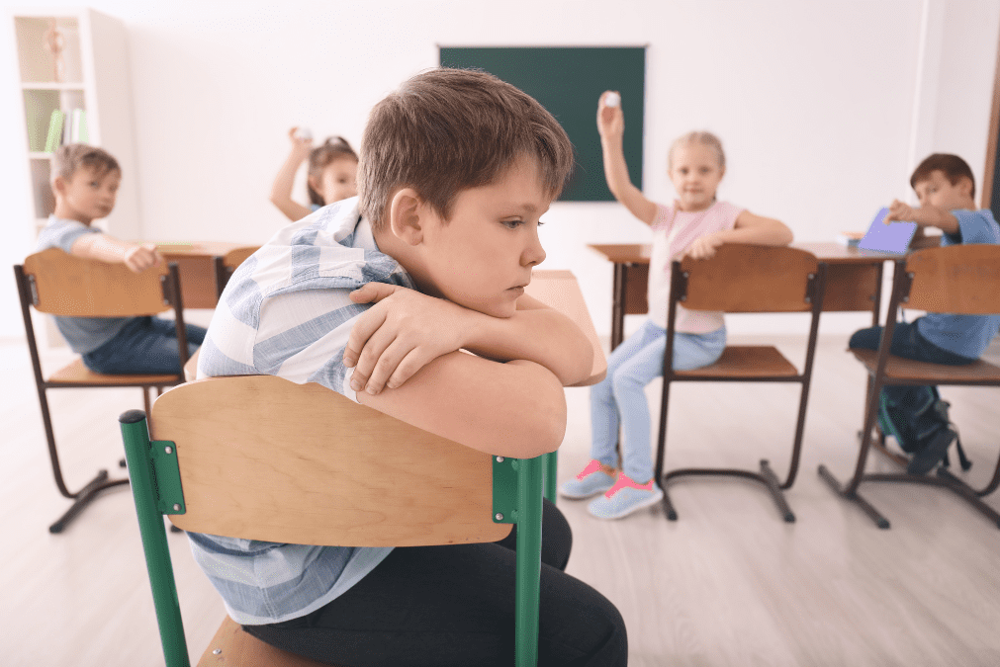

Dificultades de aprendizaje: Problemas para comprender contenidos, ritmo lento, o falta de estrategias de estudio. Bajo rendimiento escolar: Calificaciones bajas por falta de hábitos de estudio, desmotivación o problemas personales. Falta de concentración: Distracción constante por factores internos (ansiedad, cansancio) o externos (ruido, uso del celular). Problemas de convivencia Bullying (acoso escolar): Agresiones físicas, verbales o sociales entre estudiantes. Conflictos entre compañeros: Peleas, malentendidos o grupos que excluyen a otros. Problemas con docentes: Falta de comunicación, exigencias poco claras o métodos de enseñanza poco adecuados. Problemas emocionales Ansiedad y estrés escolar: Exceso de tareas, presión por calificaciones o miedo a exámenes. Falta de autoestima: Sentirse incapaz o inseguro frente a los demás. Problemas familiares que afectan el rendimiento: Divorcio, conflictos en casa o dificultades económicas. Problemas de disciplina Falta de respeto a normas: Indisciplina en clase, llegar tarde, no cumplir tareas. Conductas disruptivas: Interrumpir la clase, comportamientos agresivos o desobediencia. Problemas sociales Dificultad para hacer amigos: Timidez, inseguridad o sentirse diferente. Aislamiento social: No participar en actividades, comer solo, ser excluido. Problemas materiales o de recursos Falta de recursos educativos: Libros, materiales, tecnología insuficiente. Infraestructura inadecuada: Salones en mal estado, mala ventilación, falta de espacios recreativos.
